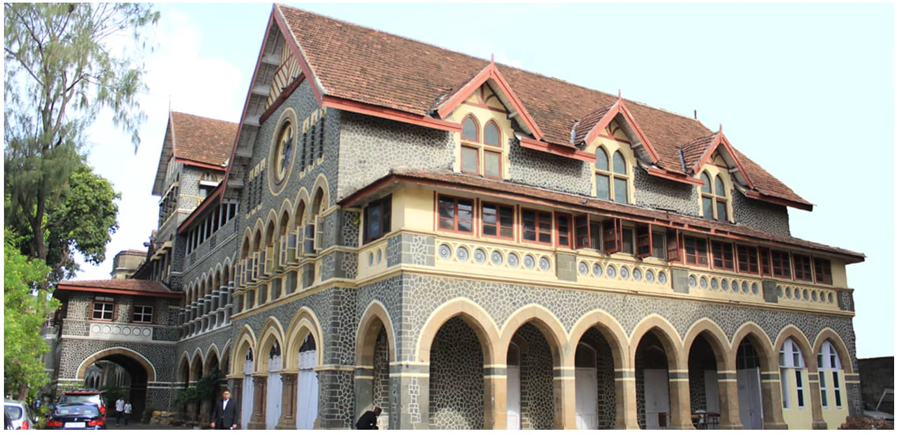

Colleges for BA in Mumbai
Wilson College
At present, Wilson College is offering Undergraduate, Postgraduate, and Doctoral courses in the field of Art, Science, and commerce. Admissions to all the courses are strictly based on merit as per the University of Mumbai.
Wilson College aims to place the maximum number of students through on-campus & off-campus placement drives. Many top-notch companies participate every year to recruit students from the college.Jai Hind College

Jai Hind College, established in 1948, is an autonomous college located in Mumbai and affiliated with the University of Mumbai. It is a junior college as well as a regular degree college. The college offers all three subject streams of Science, Commerce, and Arts for 12th grade and offers 12 undergraduate programs, 5 postgraduate programs, 1 Research program and 25 Certificate/Skill development/Value-added Courses, and also several self-financed and vocational courses to improve the employability of the students.
Admission to the college is based on merits obtained in the previous qualifying examination. The college continues to attract over 90 companies including some top MNCs like Ernst & Young, KPMG, and Deloitte every year to offer placement opportunities to the students. Some of the Jai Hind College's notable alumni are Priyanka Chopra, Aishwarya Rai, John Abraham, Sunil Dutt, Kajal Aggarwal, Kunal Kamra, Vishal Dadlani, Shaan, Malaika Arora, Kiara Advani, etc.
K J Somaiya College Of Arts & Commerce - [KJSAC]

At present, KJSAC is offering various UG, PG Courses namely, BA, B.Com, MA, and M.Com. The college also offers a doctoral-level program to offer Ph.D. degrees. Admissions to all the courses are strictly based on the entrance exams conducted by the University of Mumbai.
From the placement perspective, KJ Somaiya College of Arts & Commerce holds a record of more than 50% placements. More than 50 companies visit every year to recruit students. The highest salary package has touched the INR 7 LPA mark, while the average CTC offered is INR 2-3 LPA.St. Xavier's College
The college offers Undergraduate, Postgraduate, Certificate, and Diploma programs in the fields of Arts, Science, Business, and Commerce. Admission to these courses is both merit and entrance-based. The cut-off for the entrance exam conducted by the college ranges between 92-98 percentile for the general category students.
St. Xavier’s also provides great placement opportunities to its students. In the recent placement drive of 2020, the college witnessed significant growth in the number of placement offers. The highest salary package has touched INR 30 LPA mark. Some of the key recruiting associated with college are Accenture, Axis Bank, Crisil, Mahindra & Mahindra, SAP, and many more like them.
Mithibai College

Mithibai College of Arts, Chauhan Institute of Science and Amrutben Jivanlal College of Commerce and Economics, located in Mumbai is popularly known as Mithibai College of Arts. The college is affiliated to the University of Mumbai and accredited grade “A” by the NAAC.